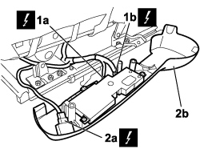
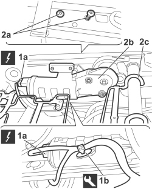

7045J33 FRONT SEAT SWINGING MOTOR, (ONE) LH OR RH - R R AFTER CHECKING THE ELECTRIC CIRCUIT
- Path
- Procedures > 70 FITTINGS > 7045 FRONT SEATS > 7045J FRONT SEAT ELECTRIC MOVEMENTS > 7045J33 FRONT SEAT SWINGING MOTOR, (ONE) LH OR RH - R R AFTER CHECKING THE ELECTRIC CIRCUIT
- Kind
- repair procedure (removal / refitting; the operation number is the code)
- Applies to
- all engines; all production periods
- Interactive page
- https://sloeber94.github.io/elrnDB-fCrm/en/#/194001116
Applies to: all engines; all production periods
 Removing
Removing
 Refitting
Refitting- Open the front side door.
- Turn the ignition key to the OFF position.
- Disconnect the negative battery terminal.
Description | Connector | |
|---|---|---|
BATTERY |
Op. 7045A10 FRONT SEAT (ONE), LEFT OR RIGHT - R.R.
1. Undo the bolts (1a) and (1b).
2. Release the guard (2a) from the front mounting (2b) and remove it releasing it from the rear section.

Applies to: all engines; all production periods
1. Disconnect the electrical connections (1a) and (1b) for the control unit.
Description | Connector | |
|---|---|---|
1a | DRIVING POSITION NODE |
Description | Connector | |
|---|---|---|
1b | DRIVING POSITION NODE |
Description | Connector | |
|---|---|---|
1a | PASSENGER POSITION NODE |
Description | Connector | |
|---|---|---|
1b | PASSENGER POSITION NODE |
2. Disconnect the electrical connection for the heater pad switch (2a) and remove the guard complete with control unit and switch (2b).
Description | Connector | |
|---|---|---|
2a | DRIVER'S SEAT HEATER SWITCH |
Description | Connector | |
|---|---|---|
2a | PASSENGER SEAT HEATER SWITCH |

Applies to: all engines; all production periods
- Prise up the cushion trim at the front, on the sides and raise the padding.
1. Disconect electrical connection (1a) and use the appropriate tool to undo retaining stud (1b).
Tool | Description | Function | Validity |
|---|---|---|---|
1878077000 | Knife | Retainer removal |
Description | Connector | |
|---|---|---|
1a | LEFT FRONT SEAT FRONT HEIGHT ADJUSTMENT MOTOR |
Description | Connector | |
|---|---|---|
1a | RIGHT FRONT SEAT FRONT HEIGHT ADJUSTMENT MOTOR |
2. Unscrew bolts (2a) and remove tilt motor (2b), partly raising the cushion spring device (2c) to facilitate motor removal.

Applies to: all engines; all production periods
Refitting
Removing- Partly raise the cushion spring device, position the motor and tighten the bolts.
- Connect the electrical connection and fit the stud in its housing.
Description | Connector | |
|---|---|---|
LEFT FRONT SEAT FRONT HEIGHT ADJUSTMENT MOTOR |
Description | Connector | |
|---|---|---|
RIGHT FRONT SEAT FRONT HEIGHT ADJUSTMENT MOTOR |
- Check that the motor is working properly.
- Arrange the padding and fit the cushion trim to the frame.
- Connect the electrical connections for the control unit.
Description | Connector | |
|---|---|---|
DRIVING POSITION NODE |
Description | Connector | |
|---|---|---|
PASSENGER POSITION NODE |
- Connect the electrical connection for the heater pad switch.
Description | Connector | |
|---|---|---|
DRIVER'S SEAT HEATER SWITCH |
Description | Connector | |
|---|---|---|
PASSENGER SEAT HEATER SWITCH |
- Fit the outer guard in the rear section, attach it to the front mounting and tighten the fixing bolts.
Op. 7045A10 FRONT SEAT (ONE), LEFT OR RIGHT - R.R.
- Connect the negative battery terminal.
Description | Connector | |
|---|---|---|
BATTERY |
Topics linked from this page (8)
- 7045A10 FRONT SEAT (ONE), LEFT OR RIGHT - R.R.
- A001 BATTERY
- I065 DRIVER'S SEAT HEATING SWITCH
- I066 PASSENGER SEAT HEATING SWITCH
- M173 DRIVE ALIGNMENT NODE
- M175 PASSENGER ALIGNMENT NODE
- N126 LEFT FRONT SEAT FRONT HEIGHT ADJUSTMENT MOTOR
- N129 RIGHT FRONT SEAT FRONT HEIGHT ADJUSTMENT MOTOR